Browse
other Author lists:
A B C
D E F
G H I
J K L
M N O
P Q R
S T U
V W X
Y Z |
|
Class,
Culture, and the Classroom
The Student Peace Movement of the 1930s
Eagan,
Eileen
294 pp • Fall 1981
cloth 978-0-87722-236-1 |
|
Presenting
Women Philosophers
edited
by Tougas, Cecile T. and Sara Ebenreck
280 pp • 7x10 • Spring 2000
paper 978-1-56639-761-2
cloth 978-1-56639-760-5
|
|
Pennsylvania Stories—Well Told
Ecenbarger,
William
248 pp • 5.5x8.25 • Spring 2017
cloth 978-1-4399-1465-6 |
|
Nuclear
Power and Social Power
Eckstein,
Rick
208 pp • 5.5x8.25 • Fall 1996
paper 978-1-56639-486-4
cloth 978-1-56639-485-7 |
| 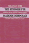 |
The
Struggle for Academic Democracy
Lessons from the 1938 Revolution in New York’s City Colleges
Edel,
Abraham
240 pp • Spring 1990
cloth 978-0-87722-691-8 |
|
Critique
of Applied Ethics
Reflections and Recommendations
Edel,
Abraham, Elizabeth Flower and Finbarr W. O'Connor
288 pp • 6x9 • Spring 1994
paper 978-1-56639-158-0
cloth 978-1-56639-157-3 |
| 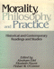 |
Morality,
Philosophy, and Practice
Historical and Contemporary Readings and Studies
edited
by Edel, Abraham, Elizabeth Flower and Finbarr W. O'Connor
620 pp • Fall 1988
cloth 978-0-87722-591-1 |
| 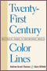 |
Twenty-First Century Color Lines
Multiracial Change in Contemporary America
edited by Grant-Thomas, Andrew, and Gary Orfield, foreword by Christopher Edley, Jr.
328 pp • 6x9• Fall 2008
paper 978-1-59213-692-6
cloth 978-1-59213-691-9 |
| 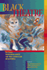 |
Black
Theatre
Ritual Performance in the African Diaspora
edited
by Harrison, Paul Carter, Victor Leo Walker II and Gus Edwards
432 pp • 7x10 • Spring 2002
paper 978-1-56639-944-9
cloth 978-1-56639-943-2
|
| 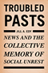 |
Troubled
Pasts
News and the Collective Memory of Social Unrest
Edy, Jill
A.
240
pp • 5.5x8.25 • Spring 2006
paper 978-1-59213-497-7
cloth 978-1-59213-496-0
|
|
Ordinary
Lives
Platoon 1005 and the Vietnam War
Ehrhart,
W. D.
344 pp • 6x9 • Spring 1999
cloth 978-1-56639-674-5
|
 |
The Archival Turn in Feminism
Outrage in Order
Eichhorn, Kate
208 pp • 5.5x8.5 • Fall 2013
paper 978-1-4399-0952-2
cloth 978-1-4399-0951-5
|
|
The
Cardinals Encyclopedia
Eisenbath,
Michael, foreword by Stan Musial
652 pp • 9x12 • Spring 1999
cloth 978-1-56639-703-2
|
|
National
Insecurity
U.S. Intelligence After the Cold War
edited
by Eisendrath, Craig, foreword by Tom Harkin
296 pp • 6x9 • Fall 1999
paper 978-1-56639-848-0
cloth 978-1-56639-744-5
|
|
Inside
Agitators
Australian Femocrats and the State
Eisenstein,
Hester
312 pp • 6x9 • Fall 1995
paper 978-1-56639-388-1
cloth 978-1-56639-387-4
|
|
Asian American Plays for a New Generation
Edited by Lee, Josephine, Don Eitel, and R. A. Shiomi
336 pp • 6x9 • Spring 2011
paper 978-1-4399-0516-6
cloth 978-1-4399-0515-9
|
| 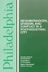 |
Philadelphia
Neighborhoods, Division, and Conflict in a Post-Industrial City
Adams,
Carolyn, David Bartelt, David Elesh, Ira Goldstein, Nancy Kleniewski
and William Yancey
224 pp • 6x9 • Fall 1991
paper 978-1-56639-078-1
cloth 978-0-87722-842-4
|
 |
Restructuring the Philadelphia Region
Metropolitan Divisions and Inequality
Adams, Carolyn, David W. Bartelt, David Elesh and Ira Goldstein with Michelle Schmitt and Joshua Freely
248 pp • 6x9 • Fall 2008
paper 978-1-59213-897-5
cloth 978-1-59213-896-8
|
|
Baltimore '68
Riots and Rebirth in an American City
edited by Elfenbein, Jessica I., Thomas L. Hollowak, and Elizabeth M. Nix
294 pp • 6x9 • Spring 2011
paper 978-1-4399-0662-0
cloth 978-1-4399-0661-3
|
|
Philadelphia
Finding the Hidden City
Elliott, Joseph E. B., Nathaniel Popkin, and Peter Woodall
200 pp • 7.875 x 10.5 • Fall 2017
cloth 978-1-4399-1300-0 |
 |
Final
Negotiations
A Story of Love, and Chronic Illness
Ellis,
Carolyn
368 pp • 6x9 • Fall 1994
paper 978-1-56639-271-6
cloth 978-1-56639-270-9
|
|
Women
Reformed, Women Empowered
Poor Mothers and the Endangered Promise of Head Start
Ames,
Lynda J. with Jeanne Ellsworth
264 pp • 5.5x8.25 • Fall 1996
paper 978-1-56639-493-2
cloth 978-1-56639-492-5 |
|
Am
I Still a Woman?
Hysterectomy and Gender Identity
Elson,
Jean
264 pp • 5.5x8.25 • Fall 2003
paper 978-1-59213-211-9
cloth 978-1-59213-210-2
|
 |
Gross Misbehavior and Wickedness
A Notorious Divorce in Early Twentieth-Century America
Elson,
Jean
340 pp • 6x9 • Spring 2017
paper 978-1-4399-1391-8
cloth 978-1-4399-1390-1 |
|
The
German Greens
Paradox between Movement and Party
edited
by Mayer, Margit and John Ely, translated by Michael Schatzschneider
352 pp • 6x9 • Spring 1997
paper 978-1-56639-516-8
cloth 978-1-56639-515-1 |
| 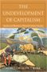 |
The Undevelopment of Capitalism
Sectors and Markets in Fifteenth-Century Tuscany
Emigh, Rebecca Jean
288 pp • 6x9 • Spring 2008
paper 978-1-59213-619-3
cloth 978-1-59213-618-6
|
| 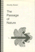 |
The
Passage of Nature
Emmet,
Dorothy
208 pp • Fall 1991
cloth 978-0-87722-896-7 |
| 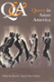 |
Q
& A
Queer in Asian America
edited
by Eng, David L. and Alice Y. Hom
445 pp • 7x10 • Fall 1998
paper 978-1-56639-640-0
cloth 978-1-56639-639-4
|
|
The
Struggle for Control of Public Education
Market Ideology vs. Democratic Values
Engel,
Michael
223 pp • 5.5x8.25 • Fall 1999
paper 978-1-56639-741-4
cloth 978-1-56639-740-7 |
|
Transfeminist Perspectives in and beyond Transgender and Gender Studies
edited by Enke, Anne
268 pp • 6x9 • Spring 2012
paper 978-1-4399-0747-4
cloth 978-1-4399-0746-7 |
|
Cultural
Politics and Social Movements
edited
by Darnovsky, Marcy, Barbara Epstein and Richard Flacks
384 pp • 6x9 • Fall 1995
paper 978-1-56639-323-2
cloth 978-1-56639-322-5
|
|
Creating
a New World Economy
Forces of Change and Plans for Action
edited
by Epstein, Gerald, Julie Graham and Jessica Nembhard, foreword
by Samuel Bowles
496 pp • 6x9 • Fall 1993
paper 978-1-56639-054-5
cloth 978-1-56639-053-8 |
| 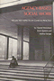 |
Agency-Based
Social Work
Neglected Aspects of Clinical Practice
Weissman,
Harold, Irwin Epstein and Andrea Savage
384 pp • Fall 1983
paper 978-0-87722-330-6
cloth 978-0-87722-322-1 |
| 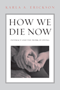 |
How We Die Now
Intimacy and the Work of Dying
Erickson, Karla A.
208 pp • 5.5x8.25 • Fall 2013
paper 978-1-4399-0824-2
cloth 978-1-4399-0823-5 |
|
Labor
at the Ballot Box
The Massachusetts Prevailing Wage Campaign of 1988
Erlich,
Mark
232 pp • Fall 1990
cloth 978-0-87722-727-4 |
|
Multiethnic
Moments
The Politics of Urban Education Reform
Erlichson, Bari Anhalt, Susan E. Clarke, Rodney E. Hero, Mara
S. Sidney and Luis Fraga, foreword by Clarence N. Stone
264 pp • 6x9 • Fall 2006
paper 978-1-59213-537-0
cloth 978-1-59213-536-3
|
|
Youth Violence
Sex and Race Differences in Offending, Victimization, and Gang Membership
Esbensen, Finn-Aage, Dana Peterson, Terrance J. Taylor and Adrienne Freng
244 pp • 6x9 • Fall 2010
paper 978-1-4399-0072-7
cloth 978-1-4399-0071-0
|
|
Monitoring
Sweatshops
Workers, Consumers, and the Global Apparel Industry
Esbenshade,
Jill
288 pp • 6x9 • Spring 2004
paper 978-1-59213-256-0
cloth 978-1-59213-255-3
|
 |
Filipino
American Lives
Espiritu,
Yen Le
240 pp • 6x9 • Spring 1995
paper 978-1-56639-317-1
cloth 978-1-56639-316-4
|
| 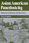 |
Asian
American Panethnicity
Espiritu,
Yen Le
238 pp • 6x9 • Fall 1992
paper 978-1-56639-096-5
cloth 978-0-87722-955-1
|
|
Parental
Leave and Child Care
Setting a Research and Policy Agenda
edited
by Hyde, Janet Shibley and Marilyn J. Essex
448 pp • Fall 1990
cloth 978-0-87722-732-8 |
|
Lesbian
and Bisexual Identities
Constructing Communities, Constructing Selves
Esterberg,
Kristin G.
216 pp • 5.5x8.25 • Spring 1997
paper 978-1-56639-510-6
cloth 978-1-56639-509-0
|
|
Tutoring Matters
Everything You Always Wanted to Know about How to Tutor
Second Edition
Chin, Tiffani, Jerome Rabow and Jeimee Estrada
240 pp • 5.5x8.25 • Fall 2011
paper 978-1-4399-0741-2
cloth 978-1-4399-0740-5
|
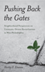 |
Pushing Back the Gates
Neighborhood Perspectives on University-Driven Revitalization in West Philadelphia
Etienne, Harley F.
192 pp • 5.5x8.25 • Spring 2012
paper 978-1-4399-0069-7
cloth 978-1-4399-0068-0 |

|
The Politics of New Immigrant Destinations
Transatlantic Perspectives
edited by Chambers, Stefanie, Diana Evans, Anthony M. Messina, and Abigail Fisher Williamson
348 pp • 6x9 • Spring 2017
paper 978-1-4399-1463-2
cloth 978-1-4399-1462-5
|
|
Living in the Crossfire
Favela Residents, Drug Dealers, and Police Violence in Rio de Janeiro
Alves, Maria Helena Moreira and Philip Evanson
254 pp • 6x9 • Spring 2011
paper 978-1-4399-0004-8
cloth 978-1-4399-0003-1
|
|
Universities
in the Age of Corporate Science
The UC Berkeley-Novartis Controversy
Eyck, Toby A. Ten, Alan P. Rudy, Dawn Coppin, Jason Konefal,
Bradley T. Shaw, Craig Harris and Lawrence Busch
256 pp • 6x9 • Fall 2006
cloth 978-1-59213-533-2
|
|
In
Griot Time
An American Guitarist in Mali
Eyre,
Banning
280 pp • 6x9 • Spring 2000
paper 978-1-56639-759-9
cloth 978-1-56639-758-2
|
|
Muhammad Ali
The Making of an Icon
Ezra, Michael
248 pp • 6x9 • Fall 2008
paper 978-1-59213-622-9
cloth 978-1-59213-661-2
|